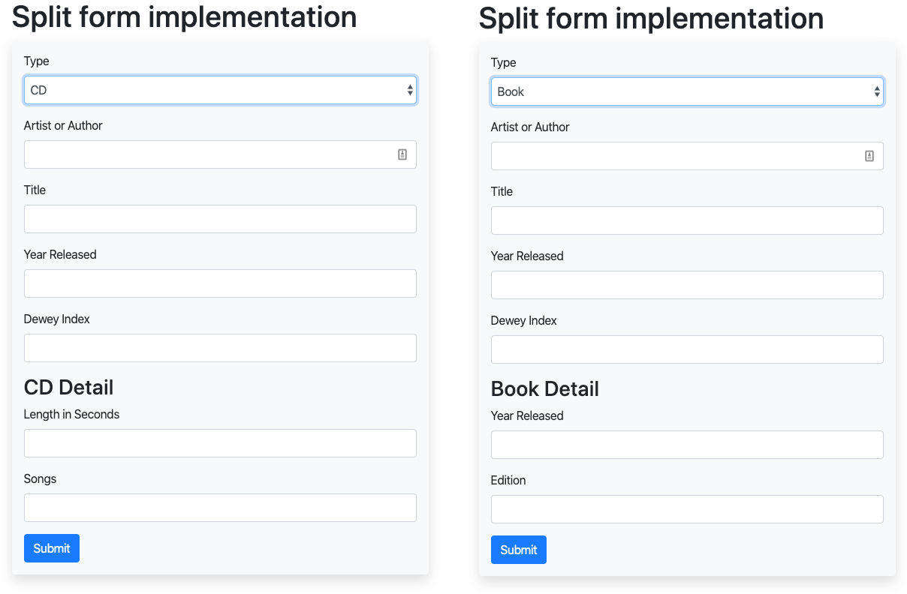
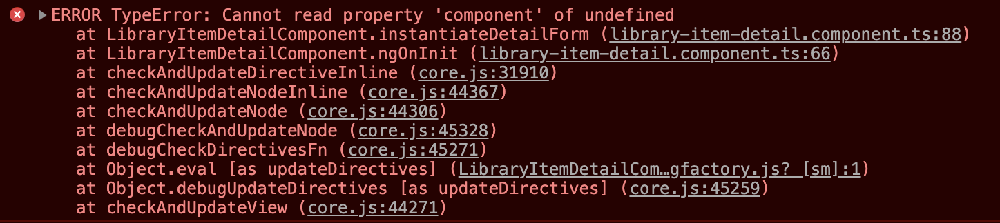

Polymorphic Angular Forms: How to create forms with different detail data
Data can be a messy thing: We sometimes have to manage data where a large part is the same between different items, but differ in some details according to the type of thing we’re collecting data for.
In this post, I’m going to look at a form for a hypothetical library application, which needs to capture library inventory consisting of multiple types: books, CDs, DVDs. Each of these library items has different requirements for data.
Common among them is the author/artist, title, dewey number, release date etc. But whereas a book has a page count and edition number, a CD has a play time and a list of songs/tracks. It seems natural to design a form which shares the common fields and loads the item’s details on selection. This means that we need to be able to adjust the form fields collected based on the value of a “library item type” field.
The solution to this problem employs similar techniques to the post on displaying the same data multiple different ways, but is a bit more involved since we’re manipulating Angular’s form feature.
A form for the two different types might look like the one in the following two screenshots, where we have a common part (up to the “Dewey Index” field) and then have different forms for a book or a CD.

In this post, I’m going to explain the approach I took for a sample Angular implementation, which consists of the following steps:
- Looking at the types required for the architecture.
- Structuring and developing the form components.
- Programming the form for editing common fields.
- Implementing the subform mechanism to dynamically load the sub forms and have them update on changes in the displayed form.
- Modification of the form to allow adding new items in addition to editing existing ones.
Defining the types for the application
Let’s start with looking at the types we need, which will lead the way for the rest of the implementation.
The main type/class will be called LibraryItem and will manage all the data common among
the various library types. Its class is defined as follows:
export class LibraryItem<T> {
id?: number;
type: string;
artistOrAuthor: string;
title: string;
yearReleased: number;
deweyIdx: string;
details: T;
}We have the usual suspects such as an id field, artistsOrAuthor, title, yearReleased
and the deweyIdx for the Dewey Decimal Classification. There also is a field called type,
which will indicate what type an instance of this class represents. Finally, there is a
field called details of generic type T, which is the field that will hold the data specific to
the various different library items such as books, CDs, DVDs, magazines etc.
Looking at the task at hand, we still need to define the classes that will be used to house
the data for the various item types managed in a library by our application. Here are
sample implementations for rudimentary BookItem and CdItem classes, defining the detail
data to collect for their respective library items:
export class BookItem {
public numPages: number;
public edition: number;
}
export class CdItem {
lengthInSeconds: number;
songs: string[];
}With the detail types of BookItem or CdItem, we will therefore have
library items of type LibraryItem<BookItem> and LibraryItem<CdItem> and so on. To get the
types correct for the form, we can already anticipate a separate type, which will be the union
of the various types for the library item details. This type, LibraryTypeUnion, will be used
whenever a variable or return type in our application can be any library item, for example on the
list page, which should be able to list any and all library items, regardless of the detail type.
So with that requirement, we get:
export type LibraryTypeUnion = LibraryItem<BookItem> |
LibraryItem<CdItem> |
LibraryItem<DvdItem>;Form component structures for collecting the data types’ details
Now that we have a system of types for our implementation, we can look at
- what components we need for the implementation.
- what role those components play in our system.
As a first step, it seems prudent to abstract out the part of the components which will contain
the data for the details of a LibraryItem into a common, abstract class, so we can more easily
assure that the classes behave the same. This abstract class, which will be extended by all
components managing the detailed type information, contains only the object
variable that should be uniform across all classes:
export abstract class AbstractLibItemDetail {
public childForm: FormGroup;
}With that out of the way, we can now turn our attention to the implementation of the components managing the forms for the different data types. The detail components’ role will be
- to define a form group, which can be inserted into the parent form’s markup to collect the details
- to provide the template markup for the form.
As an example, the following listing shows what the component class for BookDetailComponent
will look like using the abstract class. It would consist solely of a constructor accepting
Angular’s FormBuilder, which is used to define the detail form to be injected into the main
form as an Angular FormGroup. Notice how the structure of that FormGroup matches the
structure of the BookItem class shown earlier. Also in the constructor, in line 8, we
instantiate the extended abstract class through a call to super().
@Component({
selector: 'app-book-detail',
templateUrl: './book-detail.component.html',
})
export class BookDetailComponent extends AbstractLibItemDetail {
constructor(public fb: FormBuilder) {
super();
this.childForm = this.fb.group({
numPages: [''],
edition: [''],
});
}
}The form definition of the component class already lets us know what the template will look like,
which will be form elements with the usual (for Angular) formControlName property bindings, but
since we’re defining a nested form, there won’t be any <form /> elements. The template might
look like this:
<h3>Book Detail</h3>
<div class="book-detail-form" [formGroup]="childForm">
<div>
<label for="number-of-pages">Year Released</label>
<input name="numPages"
type="number" id="number-of-pages"
formControlName="numPages" />
</div>
<div>
<label for="edition">Edition</label>
<input type="text" id="edition" formControlName="edition" />
</div>
</div>There should be nothing surprising about this:
- We’re defining elements which contain the label and corresponding input field
- Using
formControlName, we bind the input field to the appropriate property in thechildFormgroup
One thing I want to point out is the [formGroup] binding on the host <div> element (line 2),
which will create the connection between this sub-form and its data to the parent component we’re
going to look at next.
The host component
Now that we have all the “details” squared away, we can take a look at how we’re going to pull the implementation together using a parent component for the display and management of the form. The parent should exhibit the following behavior:
- On creation of a new item, its form should allow to select the detail type of the item, which will then be rendered into the form at the designated location.
- When editing an existing entry, the change of item type should not be allowed, i.e. the field to select the type of item should be hidden.
- When an existing entry is edited the form should be pre-populated and display the correct form type.
I’m going to start off with editing since it simplifies the implementation because we don’t need to implement the dynamic changing of the detail form right away — since we won’t allow editing the item type. Typically, the editing and creation of items will take place in the same template, so we can simply extend our initial implementation with the creation in a second step.
Editing existing entries using LibraryItemDetailComponent
Let’s start off with the template for the library items. An abbreviated version of a
LibraryItemDetailComponent template, omitting a few form fields, looks like this:
<div>
<form [formGroup]="formDefinition" (ngSubmit)="onFormSubmit()">
<div>
<label for="artist-or-author">Artist or Author</label>
<input name="artistOrAuthor"
type="text" id="artist-or-author"
formControlName="artistOrAuthor" />
</div>
<div>
<label for="title">Title</label>
<input type="text" id="title" formControlName="title" />
</div>
...
<div id="item-detail-container">
<div #itemDetail></div>
</div>
<button type="submit">Submit</button>
</form>
</div>We can already tell a few implementation details of our component from the template:
- The component code defines the
formDefinitionproperty which will contain the form’s definition (go figure). - There will be a
@ViewChildproperty nameditemDetailbased on line 15. This view child will be the place we’re going to place our detail templates we defined earlier. - On form submission, we’re going to call a method named
onFormSubmit.
Correspondingly, our component class is going to start out like this:
export class LibraryItemDetailComponent implements OnInit {
public formDefinition: FormGroup;
/**
* The sequence in this object determines the default setting in the UI,
* as the first item is the default for an empty form
*/
private detailContentStyles = {
book: {label: 'Book', component: BookDetailComponent},
cd: {label: 'CD', component: CdDetailComponent},
dvd: {label: 'DVD', component: DvdDetailComponent},
};
@ViewChild('itemDetail', {read: ViewContainerRef, static: true})
itemDetailContainer: ViewContainerRef;
constructor(
public fb: FormBuilder,
public route: ActivatedRoute,
) {
this.formDefinition = this.fb.group({
id: [''],
type: [''],
artistOrAuthor: [''],
title: [''],
yearReleased: [''],
deweyIdx: [''],
});
}In the constructor, we inject the Angular FormBilder and an instance of ActivatedRoute,
which we will use later to extract the id of a requested item from the URL this component
was called with. In the constructor we define our base form, which will contain the common
attributes every library item will contain.
Of special note here is the type field on line 25, which will be used to specify which detail
form needs to be rendered with this library item, i.e. it determines whether we look at a book,
CD or DVD item. This property will be used to instantiate the correct detail template later
in this implementation.
We then have the definition of the itemDetailContainer property as a ViewChild with the
template identifier itemDetail, which we already saw in the component’s HTML listing on line 15.
Instances of our detail components will be assigned to this ViewChild to get them rendered into
the template. Finally, we have a mapping of identifiers (‘book’, ‘cd’ and ‘dvd’) to their
respective components and to human-readable labels, stored in the detailContentStyles property.
Setting up the composed form
In the previous section, we have seen how we can create the common part of the form. Now,
it’s time to look at how we can inject one of the detail forms into that base form. In the
ngOnInit method shown in the listing of the component below, we extract the ID of the
item to load from the URL in line 4, then load the data belonging to that ID (not shown)
and then pass the loaded data to a method instantiateDetailForm which performs the
instantiation of the component of the corresponding type.
private childComponent: any;
ngOnInit() {
const itemId = this.route.snapshot.paramMap.get('id');
let formData: LibraryTypeUnion = this.formDefinition.value;
// ... load the library item with ID itemId and store in formData;
this.instantiateDetailForm(formData);
}
private instantiateDetailForm(formData: LibraryTypeUnion) {
const childComponentRef = this.detailContentStyles[formData.type].component;
const factoryInstance = this.componentFactoryResolver.resolveComponentFactory(childComponentRef);
this.childComponent = this.itemDetailContainer.createComponent(factoryInstance);
this.rebuildFormAndPopulateWith(formData);
}
private rebuildFormAndPopulateWith(formData: LibraryTypeUnion): void {
const childForm = this.childComponent.instance.childForm;
this.formDefinition.addControl('details', childForm as FormGroup);
this.formDefinition.patchValue(formData);
}The first three lines of the instantiateDetailForm method extract a reference to the
component needing to be instantiated from the previously explained detailsContentStyles
map, then extract its factory method and invokes the latter to instantiate
the child component (i.e. child form) to be placed into the form. A reference to that
component is stored in the childComponent object property shown in line 1. We also need
to add the componentFactoryResolver to our constructor to make it available to this method:
constructor(
public fb: FormBuilder,
public route: ActivatedRoute,
private componentFactoryResolver: ComponentFactoryResolver,
) { ... }Now we have an instance of the component containing the detail form of the type specified by
the loaded object’s type property. All that’s left is to add the instantiated component’s form
to the base form defined earlier and fill the entire form with the loaded data.
That functionality is contained in the rebuildFormAndPopulateWith method, which retrieves the
instance of the child component instantiated just now and then references its childForm property,
which we defined earlier in the AbstractLibItemDetail class. That childForm references the
form instance, which gets added as a new FormControl by the name of details in line 22.
Finally, the form is populated with the data from the passed in formData.
With the implementation at this stage, we can click on a list page showing all item types and
are shown the form for the correct library item, pre-populated with the record’s data. We
can’t yet change the type of the library item by changing its type property dynamically.
The important take-aways from this implementation so far are:
- The record belonging to the specified ID contains an identifier as to the object’s type
- That
typeis mapped to the corresponding component, which is consequently instantiated - The instantiated component is then inserted as a sub-form into the base form as the
detailsproperty, thus creating nested forms. - The entire form is then populated with the data of the entry being edited.
Adding new item details of selectable type
So far, we have implemented the capability to edit an existing record. Now, we’re going to expand that functionality by adding the creation of a new entry and add a field to the base form which lets the user select what type of library item to create. For this, we need the following additions:
- Add a selector to the form so the user can select the type of the item to create.
- That selector should only be shown when adding a new
LibraryItem, not when editing one. - A method to dynamically change the detail section depending on the user’s selection of the item’s type.
Let’s start with the second point: Showing the type selector only when adding a new item. For this,
we can use the router’s data attribute and the template’s *ngIf directive. First, we
create two separate routes in the applications routing module, list/:id and list/new.
For this to work, it is important that the list/new route come first, since the Angular
router operates by the “first man wins” principle, and if the order is reversed, we would
always load the list/:id route, only that sometimes the value of :id would be “new”.
const routes: Routes = [
{ path: 'list', component: LibraryItemListComponent },
{
path: 'list/new',
component: LibraryItemDetailComponent,
data: {createNew: true} },
{
path: 'list/:id',
component: LibraryItemDetailComponent,
data: {createNew: false} }In this snippet, we tell Angular to use the same LibraryItemDetailComponent for the two routes,
but pass a different data value for the createNew property, depending on whether we want
to edit or add. To read that value, we need to extend our ngOnInit() method to store
the value of the passed createNew value in a local property. Thus, we need to add something
like the following to the component:
public createNewLibraryItem: boolean;
private iterableContentTypes = [];
ngOnInit() {
this.makeItemOptionIterable();
this.createNewLibraryItem = this.route.snapshot.data.createNew;
// ... implementation as before
}
private makeItemOptionIterable() {
for (const option in this.detailContentStyles) {
if (this.detailContentStyles.hasOwnProperty(option)) {
this.iterableContentTypes.push({
id: option,
label: this.detailContentStyles[option].label
});
}
}
}We added two properties to the class. One, createNewLibraryItem, is set in ngOnInit on
line 6 based on the value we specified in the router’s data property from the previous
listing. The other, iterableContentTypes is needed to populate a drop down with available
library item types, which we defined earlier in a property called detailContentStyles.
The iterableContentTypes is populated by the makeItemOptionIterable method invoked in
ngOnInit(). That method creates an array with available library item types from the
detailContentStyles to get around a limitation of Angular’s *ngFor, which cannot
iterate over objects.
The corresponding template is extended with the following markup:
<div *ngIf="createNewLibraryItem">
<label for="type">Type</label>
<select name="type" id="type"
formControlName="type"
(change)="onMediaTypeSelectionChanged($event)">
<option *ngFor="let option of iterableContentTypes"
value="{{ option.id }}">{{ option.label }}</option>
</select>
</div>This implementation only shows the item type selector if the data.createNew property set in
the route is “truthy” (line 1). It then builds a select element with an <option /> for
each entry in the iterableContentTypes array we populated in the previous step.
Finally, we see that whenever the user changes the selection, the onMediaTyeSelectionChanged()
method is invoked, which will change the detail part of the form we generated earlier. This
method is defined like this:
public onMediaTypeSelectionChanged($event) {
this.itemDetailContainer.clear();
this.instantiateDetailForm(this.formDefinition.value);
}As previously discussed, the itemDetailContainer property contains a @ViewChild component
for the selected library item type details rendered as the “detail” of the library item. In
line 2, we clear the currently rendered component from
the parent template and follow that with a call to the instantiateDetailForm() method
discussed earlier, which appends the selected FormGroup to the details property of the form.
It passes the current form definition, including the detail form type, which will lead to the
generation and repopulating of the form fields.
The implementation of the onMediaTypeSelectionChanged method only clears the child form from the
template. We still need to remove the old control from the form instance, which we do by adding to
the rebuildFormAndPopulateWith(formData) method to remove the reference to the FormGroup.
This is shown on line 3 of the following listing, which shows the method in its final state:
private rebuildFormAndPopulateWith(formData: LibraryTypeUnion): void {
const childForm = this.childComponent.instance.childForm;
this.formDefinition.removeControl('details');
this.formDefinition.addControl('details', childForm as FormGroup);
this.formDefinition.patchValue(formData);
}One final detail remains: The presetting of the library item type <select /> element when
we are adding a new entry to the library. We need to set the default item type, because if it
is left undefined, Angular will throw an error:

Therefore, we need to check in our ngOnInit() method whether we received an id or not
(recall that we’re determining which form field set to display through a data attribute on
the route). If we don’t receive an :id, we use the empty form and then populate the type
field with the first entry in our detail type list:
const itemId = this.route.snapshot.paramMap.get('id');
let formData: LibraryTypeUnion = this.formDefinition.value;
if (itemId) loadDataFromServer(itemId);
else formData.type = this.iterableContentTypes[0].id;Summary and (brief) discussion
In this post, I’ve looked at how to create forms for entities which have some common attributes
but differ in their detail. In this example, I used a library catalog to illustrate how such a
system could be implemented on the front end using the Angular framework. A question remains
about the backend, which would also have to deal with the variances in the details field.
Using a SQL database, we would have to create new tables for the details of each library item
type and then pull the data using joins.
A more efficient, flexible and clearer way would be to use a document-based database, which can directly store the data structure in one document, while allowing to create indices on the common attributes to speed up retrieval of documents. This would also support a Domain Driven Design approach to store all the data for one entity in one database record.
The Angular implementation for this example, using dummy data, can be found in my “split-form” repository on Bitbucket. I want to thank my colleague David Nguyen for the original problem of the library implementation, which served as the example here.